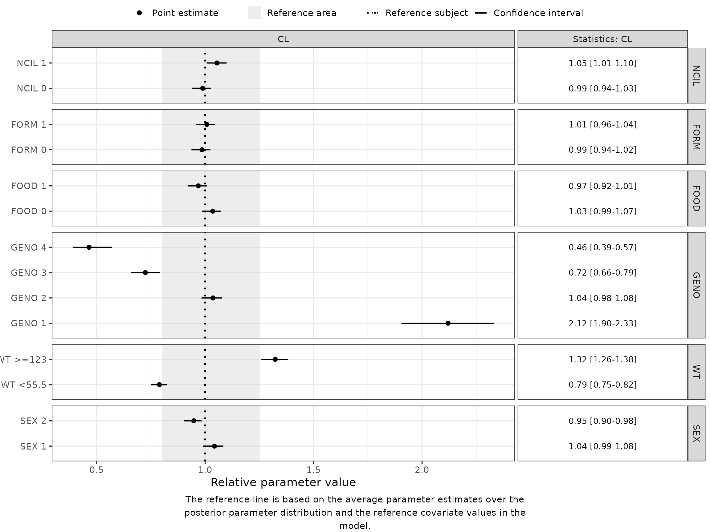
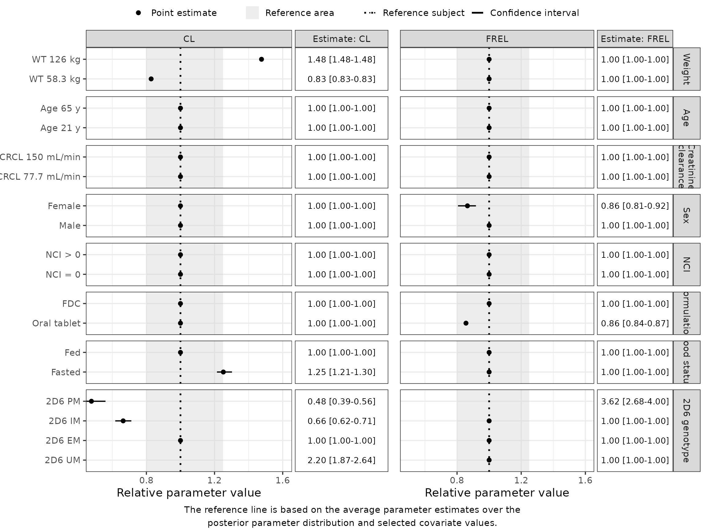
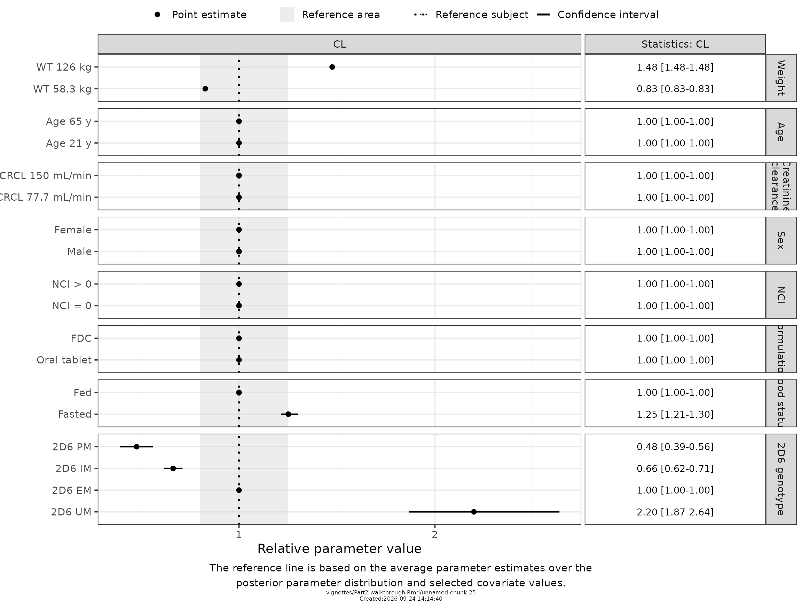

2. Walkthrough: End-to-End Forest Plots for NONMEM Models
Part2-walkthrough.Rmd
suppressPackageStartupMessages({
library(PMXForest)
library(dplyr)
library(ggplot2)
})
theme_set(theme_bw(base_size = 14))
theme_update(plot.title = element_text(hjust = 0.5))
set.seed(865765)Introduction
This walkthrough covers the full process of building Forest plots from a NONMEM model and PsN output. It extends the Quick-Start with:
- two ways to build the covariate structure, and how to label the rows;
- the parameter function in detail, including missing-value handling;
- the four sources of parameter uncertainty
getSamples()accepts; - an explicit reference subject with
setupDfRefRow(); -
empirical Forest plots with
getForestDFemp(); - the formatting arguments of
forestPlot().
The example is a PK model (run7) built with the stepwise covariate model (SCM) in PsN. Because SCM keeps only covariates that meet a significance criterion, some rows of a parametric Forest plot from an SCM model show no effect. An empirical Forest plot instead reads the covariate effect from the analysis data and can therefore show covariates that are not in the model.
modDir <- "SimVal"
dataFile <- system.file("extdata", paste0(modDir, "/DAT-1-MI-PMX-2.csv"), package = "PMXForest")
modFile <- system.file("extdata", paste0(modDir, "/run7.mod"), package = "PMXForest")
extFile <- system.file("extdata", paste0(modDir, "/run7.ext"), package = "PMXForest")
covFile <- system.file("extdata", paste0(modDir, "/run7.cov"), package = "PMXForest")
bsFile <- system.file("extdata", paste0(modDir, "/bs7.dir/raw_results_run7bs.csv"), package = "PMXForest")
sirFile <- system.file("extdata", paste0(modDir, "/sir7.dir/raw_results_run7.csv"), package = "PMXForest")
dfData <- read.csv(dataFile)modFile is the run7 control stream itself. Everything this walkthrough derives comes out of it, so it is worth having open alongside. It is bundled with the package, so it can be read straight off disk — the whole file is below, and the records that matter here are $DATA in Section 0 and $PK in Section 2.
Show the full run7.mod control stream
cat(readLines(modFile), sep = "\n")
#> ;; 1. Based on: 6
#> ;; 2. Description:
#> ;; Final scm model
#> ;; 3. Label:
#> ;; SimVal base model
#> ;------------------------------------------------------------------------------
#> $PROBLEM run 1
#> $INPUT NO ID STUDYID TAD TIME DAY AMT RATE ODV DV EVID BLQ DOSE
#> FOOD FORM TYPE WT HT AGE SEX RACE ETHNIC GENO
#> SMOK AST ALT BILI BMI CRCL NCI NCIL RACEL
#> RACEL1 RACEL2 RACEL3 GENO1 GENO2 GENO3 GENO4
#> $DATA ../../ProducedData/Dataset/DAT-1-MI-PMX-2.csv
#> IGNORE=@ IGNORE(TYPE.EQN.2) IGNORE(BLQ.EQN.1)
#> IGNORE=(ID.EQN.895)
#> $SUBROUTINE ADVAN2 TRANS2
#> $PK
#> ;;; FRELSEX-DEFINITION START
#> IF(SEX.EQ.1.0000E+00) FRELSEX = 1 ; Most common
#> IF(SEX.EQ.2.0000E+00) FRELSEX = ( 1 + THETA(14))
#> ;;; FRELSEX-DEFINITION END
#>
#>
#> ;;; FRELGENO4-DEFINITION START
#> IF(GENO4.EQ.0.0000E+00) FRELGENO4 = 1 ; Most common
#> IF(GENO4.EQ.1.0000E+00) FRELGENO4 = ( 1 + THETA(13))
#> ;;; FRELGENO4-DEFINITION END
#>
#>
#> ;;; FRELFORM-DEFINITION START
#> IF(FORM.EQ.1.0000E+00) FRELFORM = 1 ; Most common
#> IF(FORM.EQ.0.0000E+00) FRELFORM = ( 1 + THETA(12))
#> ;;; FRELFORM-DEFINITION END
#>
#> ;;; FREL-RELATION START
#> FRELCOV=FRELFORM*FRELGENO4*FRELSEX
#> ;;; FREL-RELATION END
#>
#>
#> ;;; CLFOOD-DEFINITION START
#> IF(FOOD.EQ.1.0000E+00) CLFOOD = 1 ; Most common
#> IF(FOOD.EQ.0.0000E+00) CLFOOD = ( 1 + THETA(11))
#> ;;; CLFOOD-DEFINITION END
#>
#> ;;; CL-RELATION START
#> CLCOV=CLFOOD
#> ;;; CL-RELATION END
#>
#>
#> TVFREL = THETA(1)
#>
#> TVFREL = FRELCOV*TVFREL
#>
#> CLWT = (WT/75)**THETA(2)
#> CLGENO1 = 1
#> CLGENO2 = 1
#> CLGENO3 = 1
#> CLGENO4 = 1
#> IF(GENO1.EQ.1) CLGENO1 = (1+THETA(8))
#> IF(GENO3.EQ.1) CLGENO3 = (1+THETA(9))
#> IF(GENO4.EQ.1) CLGENO4 = (1+THETA(10))
#>
#> CLCOV1 = CLWT*CLGENO1*CLGENO2*CLGENO3*CLGENO4
#>
#> VWT = (WT/75)**THETA(3)
#> VCOV1 = VWT
#>
#> TVCL = THETA(4) * CLCOV1
#>
#> TVCL = CLCOV*TVCL
#> TVV = THETA(5) * VCOV1
#> TVMAT = THETA(6)
#> TVD1 = THETA(7)
#>
#> FREL = TVFREL * EXP(ETA(2))
#> CL = TVCL * EXP(ETA(3))
#> V = TVV * EXP(ETA(4))
#> MAT = TVMAT * EXP(ETA(5))
#> D1 = MAT*(1-TVD1)
#>
#> F1 = FREL
#> KA = 1 / (MAT-D1)
#> S2 = V
#>
#> $ERROR
#> CP = A(2)*1000 / V
#> IPRED = LOG(CP + 0.00001)
#> Y = IPRED + EPS(1) * EXP(ETA(1))
#>
#> $THETA 1 FIX ; 1. TVFREL
#> $THETA 0.75 FIX ; 2. WT coef on TVCL
#> $THETA 1 FIX ; 3. WT coef on TVV
#> $THETA (0,11.9) ; 4. TVCL
#> $THETA (0,191) ; 5. TVV
#> $THETA (0,6.47) ; 6. TVMAT
#> $THETA (0,0.616,1) ; 7 TVD1
#> $THETA (-1,1.24) ; GENO2=1 on CL
#> $THETA (-1,-0.335) ; GENO3=1 on CL
#> $THETA (-1,-0.515) ; GENO4=1 on CL
#> $THETA (-1.00,0.252,3.00) ; CLFOOD1
#> $THETA (-1.00,-0.145,3.00) ; FRELFORM1
#> $THETA (-1.00,2.64,3.00) ; FRELGENO41
#> $THETA (-1.00,-0.139,3.00) ; FRELSEX1
#> $OMEGA 0.0257 ; 1. IIV on RUV
#> $OMEGA 0.256 ; 2. IIV on FREL
#> $OMEGA 0.0476 ; 3. IIV on CL
#> $OMEGA 0.159 ; 4. IIV on V
#> $OMEGA 0.144 ; 5. IIV on MAT
#> $SIGMA 0.0444 ; 1. RUV
#> $ESTIMATION METHOD=1 INTER ETASTYPE=1 MAXEVAL=9999 PRINT=1 NOABORT
#> $COVARIANCE PRINT=E MATRIX=S UNCONDITIONAL
#> $TABLE NO ID STUDYID TAD TIME DAY AMT RATE ODV DV EVID BLQ DOSE
#> FOOD FORM TYPE WT HT AGE SEX RACE ETHNIC GENO SMOK AST ALT
#> BILI BMI CRCL NCI NCIL RACEL RACEL1 RACEL2 RACEL3 GENO1
#> GENO2 GENO3 GENO4 CPRED CIPREDI CWRES CIWRES ETAS(1:LAST)
#> FREL CL V MAT TVD1
#> NOPRINT ONEHEADER FILE=xptab70. Use the data the model actually saw
What is in the data file is not what the model was fitted to. run7’s $DATA record carries IGNORE statements, so NONMEM dropped records before estimating, and a Forest plot built from everything in the file describes a population the model never saw.
That $DATA record is the rule the filtering has to reproduce, so read it directly:
nmLines <- readLines(modFile)
dataRec <- grep("^\\$DATA", nmLines)
nextRec <- grep("^\\$", nmLines)
cat(nmLines[dataRec:(nextRec[nextRec > dataRec][1] - 1)], sep = "\n")
#> $DATA ../../ProducedData/Dataset/DAT-1-MI-PMX-2.csv
#> IGNORE=@ IGNORE(TYPE.EQN.2) IGNORE(BLQ.EQN.1)
#> IGNORE=(ID.EQN.895)filterByModel() applies exactly those statements, and the result — the records NONMEM actually used — is the analysis data:
dfData <- filterByModel(dfData, modFile)
#> Applying IGNORE: (TYPE == 2) | (BLQ == 1) | (ID == 895)
#> Removed 35131 of 69016 record(s) and 210 subject(s).The difference is not cosmetic. Here it removes 210 of 964 subjects, and the 5th percentile of creatinine clearance — one of the values that becomes a Forest plot row in the next section — moves from 74.9 to 77.7 mL/min. Every covariate summary below is computed on the analysis data for that reason.
1. Build the covariate structure
Each row of dfCovs becomes one row of the Forest plot. The covariate effect on that row is a function of the covariate values in that row. Cells that are not active on a row hold the missing-value indicator (-99 by default).
setupDfCovs() builds that structure from the data. It summarises each covariate and reshapes the result in one call, so the values plotted are the ones the study actually observed rather than numbers typed in by hand. Continuous covariates are represented by their 5th and 95th percentiles; categorical covariates get one row per level.
dfCovs <- setupDfCovs(
data = dfData,
covariates = c("WT", "AGE", "CRCL", "SEX", "NCIL", "FORM", "FOOD", "GENO"),
catRef = list(GENO = 2),
sep = "",
idVar = "ID"
)
dfCovs
#> WT AGE CRCL SEX NCIL FORM FOOD GENO1 GENO3 GENO4 COVARIATEGROUPS
#> 1 58.3 -99 -99.0 -99 -99 -99 -99 -99 -99 -99 WT
#> 2 126.0 -99 -99.0 -99 -99 -99 -99 -99 -99 -99 WT
#> 3 -99.0 21 -99.0 -99 -99 -99 -99 -99 -99 -99 AGE
#> 4 -99.0 65 -99.0 -99 -99 -99 -99 -99 -99 -99 AGE
#> 5 -99.0 -99 77.7 -99 -99 -99 -99 -99 -99 -99 CRCL
#> 6 -99.0 -99 150.0 -99 -99 -99 -99 -99 -99 -99 CRCL
#> 7 -99.0 -99 -99.0 1 -99 -99 -99 -99 -99 -99 SEX
#> 8 -99.0 -99 -99.0 2 -99 -99 -99 -99 -99 -99 SEX
#> 9 -99.0 -99 -99.0 -99 0 -99 -99 -99 -99 -99 NCIL
#> 10 -99.0 -99 -99.0 -99 1 -99 -99 -99 -99 -99 NCIL
#> 11 -99.0 -99 -99.0 -99 -99 0 -99 -99 -99 -99 FORM
#> 12 -99.0 -99 -99.0 -99 -99 1 -99 -99 -99 -99 FORM
#> 13 -99.0 -99 -99.0 -99 -99 -99 0 -99 -99 -99 FOOD
#> 14 -99.0 -99 -99.0 -99 -99 -99 1 -99 -99 -99 FOOD
#> 15 -99.0 -99 -99.0 -99 -99 -99 -99 1 0 0 GENO
#> 16 -99.0 -99 -99.0 -99 -99 -99 -99 0 0 0 GENO
#> 17 -99.0 -99 -99.0 -99 -99 -99 -99 0 1 0 GENO
#> 18 -99.0 -99 -99.0 -99 -99 -99 -99 0 0 1 GENOTwo arguments are doing specific work here, and they do separate jobs.
catRef = list(GENO = 2) chooses which level is the reference — the one left out of the one-hot columns. run7 uses genotype level 2 (2D6 EM) as its reference and estimates effects for levels 1, 3 and 4; without catRef, setupDfCovs() would drop the lowest level instead.
sep = "" chooses the separator in the column names, nothing else.
Together they decide what the columns are called:
| call | one-hot columns |
|---|---|
setupDfCovs(...) |
GENO_2, GENO_3, GENO_4
|
catRef = list(GENO = 2) |
GENO_1, GENO_3, GENO_4
|
catRef = list(GENO = 2), sep = "" |
GENO1, GENO3, GENO4
|
The last row is the one that matters here: those are the names run7’s $PK uses, so a parameter function generated from it reads exactly these columns.
Pass the same catRef and sep to setupDfRefRow() in Section 4. They have to agree, or the reference row’s columns will not line up with dfCovs and the reference values are silently dropped.
Row labels and covariate-group labels are supplied separately. Deriving the numeric ones from dfCovs keeps them honest: setupDfCovs() computes the percentiles, so hard-coding them in the labels is a standing invitation for the two to drift apart. The stopifnot() makes a miscount fail immediately rather than shifting every label below it.
covnames <- c(
paste0("WT ", dfCovs$WT[1:2], " kg"),
paste0("Age ", dfCovs$AGE[3:4], " y"),
paste0("CRCL ", dfCovs$CRCL[5:6], " mL/min"),
"Male", "Female",
"NCI = 0", "NCI > 0",
"Oral tablet", "FDC",
"Fasted", "Fed",
"2D6 UM", "2D6 EM", "2D6 IM", "2D6 PM"
)
stopifnot(length(covnames) == nrow(dfCovs))
covariateGroupNames <- c(
"Weight", "Age", "Creatinine\nclearance", "Sex",
"NCI", "Formulation", "Food status", "2D6 genotype"
)setupDfCovs() is a composition of two lower-level functions: getCovStats() chooses the values, createInputForestData() lays them out as rows. Call them yourself when you want values the data does not supply — a weight of exactly 70 kg, a covariate combination no subject has — or a geometry setupDfCovs() does not produce. Both, along with conditionalCovs, useMissVal and contRef, are covered in the Forest plot inputs deep dive.
More often, though, the answer is neither the wrapper nor the primitives: the generated structure is right except for one part. A protocol may specify weight bands rather than the observed percentiles, or the question may be about a combination of covariates, which setupDfCovs() does not produce because it varies one at a time. Take what it produced and edit that — the deep dive’s Adjusting what setupDfCovs() produced works through both.
2. Generate the parameter function
The parameter function turns a vector of thetas and one row of covariate values into the quantities to plot. Written by hand it duplicates algebra that already exists in the control stream, and it is the easiest place in this workflow to introduce an error that no test will catch.
createParamFunction() writes it by translating the model’s $PK block.
gen <- createParamFunction(
modFile,
parameters = c("CL", "FREL", "V"),
covRef = list(GENO1 = 0, GENO3 = 0),
secondary = list(AUC = "80 / (CL / FREL)"),
quiet = TRUE
)Two arguments need explaining.
covRef supplies reference values the control stream does not settle on its own. run7’s $PK carries GENO1 and GENO3 dummies that no IF() tests directly, so the generator can only propose a level — and warns when it does. Stating them removes the guess. Which covariates need this is not something to memorise: run the call without covRef once and the warning names them.
secondary adds quantities that are not in $PK at all. AUC here is exposure after an 80 mg dose, and the dose appears nowhere in the control stream, so no translator could infer it. Anything derived — AUC, half-life, Cmax — arrives this way; the Secondary parameters vignette covers the fuller forms, including running an mrgsolve or deSolve simulation.
Nothing has been evaluated yet. gen$code is source text, and the point of returning text is that you read it against the control stream before trusting it. Here is the $PK it was translated from, so the two can be compared directly:
pkRec <- grep("^\\$PK", nmLines)
cat(nmLines[pkRec:(nextRec[nextRec > pkRec][1] - 1)], sep = "\n")
#> $PK
#> ;;; FRELSEX-DEFINITION START
#> IF(SEX.EQ.1.0000E+00) FRELSEX = 1 ; Most common
#> IF(SEX.EQ.2.0000E+00) FRELSEX = ( 1 + THETA(14))
#> ;;; FRELSEX-DEFINITION END
#>
#>
#> ;;; FRELGENO4-DEFINITION START
#> IF(GENO4.EQ.0.0000E+00) FRELGENO4 = 1 ; Most common
#> IF(GENO4.EQ.1.0000E+00) FRELGENO4 = ( 1 + THETA(13))
#> ;;; FRELGENO4-DEFINITION END
#>
#>
#> ;;; FRELFORM-DEFINITION START
#> IF(FORM.EQ.1.0000E+00) FRELFORM = 1 ; Most common
#> IF(FORM.EQ.0.0000E+00) FRELFORM = ( 1 + THETA(12))
#> ;;; FRELFORM-DEFINITION END
#>
#> ;;; FREL-RELATION START
#> FRELCOV=FRELFORM*FRELGENO4*FRELSEX
#> ;;; FREL-RELATION END
#>
#>
#> ;;; CLFOOD-DEFINITION START
#> IF(FOOD.EQ.1.0000E+00) CLFOOD = 1 ; Most common
#> IF(FOOD.EQ.0.0000E+00) CLFOOD = ( 1 + THETA(11))
#> ;;; CLFOOD-DEFINITION END
#>
#> ;;; CL-RELATION START
#> CLCOV=CLFOOD
#> ;;; CL-RELATION END
#>
#>
#> TVFREL = THETA(1)
#>
#> TVFREL = FRELCOV*TVFREL
#>
#> CLWT = (WT/75)**THETA(2)
#> CLGENO1 = 1
#> CLGENO2 = 1
#> CLGENO3 = 1
#> CLGENO4 = 1
#> IF(GENO1.EQ.1) CLGENO1 = (1+THETA(8))
#> IF(GENO3.EQ.1) CLGENO3 = (1+THETA(9))
#> IF(GENO4.EQ.1) CLGENO4 = (1+THETA(10))
#>
#> CLCOV1 = CLWT*CLGENO1*CLGENO2*CLGENO3*CLGENO4
#>
#> VWT = (WT/75)**THETA(3)
#> VCOV1 = VWT
#>
#> TVCL = THETA(4) * CLCOV1
#>
#> TVCL = CLCOV*TVCL
#> TVV = THETA(5) * VCOV1
#> TVMAT = THETA(6)
#> TVD1 = THETA(7)
#>
#> FREL = TVFREL * EXP(ETA(2))
#> CL = TVCL * EXP(ETA(3))
#> V = TVV * EXP(ETA(4))
#> MAT = TVMAT * EXP(ETA(5))
#> D1 = MAT*(1-TVD1)
#>
#> F1 = FREL
#> KA = 1 / (MAT-D1)
#> S2 = VNote the preamble: every missing-value decision is hoisted to the top and annotated with where the reference came from, so the algebra below it is a plain transliteration you can compare line by line with $PK.
cat(gen$code, sep = "\n")
#> ## Generated by PMXForest::createParamFunction() from run7.mod.
#> ## Typical values: every ETA() in $PK has been set to 0.
#> ## Review this against the control stream before use.
#>
#> paramFunction <- function(thetas, df, ...) {
#>
#> ## ---- Covariate references, taken from run7.mod --------------------------------------
#> ## SEX reference level of the "; Most common" branch [run7.mod:18]
#> SEX <- if (!is.null(df[["SEX"]]) && df[["SEX"]] != -99) df[["SEX"]] else 1
#> ## GENO4 reference level of the "; Most common" branch [run7.mod:24]
#> GENO4 <- if (!is.null(df[["GENO4"]]) && df[["GENO4"]] != -99) df[["GENO4"]] else 0
#> ## FORM reference level of the "; Most common" branch [run7.mod:30]
#> FORM <- if (!is.null(df[["FORM"]]) && df[["FORM"]] != -99) df[["FORM"]] else 1
#> ## FOOD reference level of the "; Most common" branch [run7.mod:40]
#> FOOD <- if (!is.null(df[["FOOD"]]) && df[["FOOD"]] != -99) df[["FOOD"]] else 1
#> ## WT normalisation constant in (WT / 75) [run7.mod:53]
#> WT <- if (!is.null(df[["WT"]]) && df[["WT"]] != -99) df[["WT"]] else 75
#> ## GENO1 supplied through covRef
#> GENO1 <- if (!is.null(df[["GENO1"]]) && df[["GENO1"]] != -99) df[["GENO1"]] else 0
#> ## GENO3 supplied through covRef
#> GENO3 <- if (!is.null(df[["GENO3"]]) && df[["GENO3"]] != -99) df[["GENO3"]] else 0
#>
#> ## ---- $PK, transliterated ---------------------------------------------------
#> if (SEX == 1) FRELSEX <- 1
#> if (SEX == 2) FRELSEX <- 1 + thetas[14]
#> if (GENO4 == 0) FRELGENO4 <- 1
#> if (GENO4 == 1) FRELGENO4 <- 1 + thetas[13]
#> if (FORM == 1) FRELFORM <- 1
#> if (FORM == 0) FRELFORM <- 1 + thetas[12]
#> FRELCOV <- FRELFORM * FRELGENO4 * FRELSEX
#> if (FOOD == 1) CLFOOD <- 1
#> if (FOOD == 0) CLFOOD <- 1 + thetas[11]
#> CLCOV <- CLFOOD
#> TVFREL <- thetas[1]
#> TVFREL <- FRELCOV * TVFREL
#> CLWT <- (WT / 75)^thetas[2]
#> CLGENO1 <- 1
#> CLGENO2 <- 1
#> CLGENO3 <- 1
#> CLGENO4 <- 1
#> if (GENO1 == 1) CLGENO1 <- 1 + thetas[8]
#> if (GENO3 == 1) CLGENO3 <- 1 + thetas[9]
#> if (GENO4 == 1) CLGENO4 <- 1 + thetas[10]
#> CLCOV1 <- CLWT * CLGENO1 * CLGENO2 * CLGENO3 * CLGENO4
#> VWT <- (WT / 75)^thetas[3]
#> VCOV1 <- VWT
#> TVCL <- thetas[4] * CLCOV1
#> TVCL <- CLCOV * TVCL
#> TVV <- thetas[5] * VCOV1
#> FREL <- TVFREL # ETA() -> 0 (typical value)
#> CL <- TVCL # ETA() -> 0 (typical value)
#> V <- TVV # ETA() -> 0 (typical value)
#>
#> ## ---- Secondary parameters -------------------------------------------------
#> ## AUC (inline snippet)
#> AUC <- local({ 80 / (CL / FREL) })
#>
#> list(
#> CL = CL,
#> FREL = FREL,
#> V = V,
#> AUC = AUC
#> )
#> }
#>
#> ## functionListName <- c("CL", "FREL", "V", "AUC")
#> ## noBaseThetas <- 14Once that matches the model, evaluate it:
The call also returns the two values that otherwise get typed in by hand and go stale — the parameter names, and the THETA count getForestDFSCM() needs:
functionListName <- gen$functionListName
functionListName
#> [1] "CL" "FREL" "V" "AUC"
gen$noBaseThetas
#> [1] 14If the model was run with a $TABLE containing both the parameters and the covariates, verifyParamFunction() turns “do I trust this translation?” into a pass or a fail, by comparing the generated function against the values NONMEM itself wrote:
verifyParamFunction(gen, tabFile = "xptab7", thetas = thetas)
#> PASS - verifyParamFunction: 3/3 parameter(s)No $TABLE is bundled with the package, so that call is shown rather than run.
What the generated function must satisfy — the function(thetas, df, ...) contract, why df is one row, and why the -99 guards are needed even when the data has no missing values — is set out in Preparing Forest plot inputs, Section 2.1. Read it when you need to write one by hand, which Section 2.3 there describes.
And if the generated function is not quite right, it does not have to be thrown away. It is source text precisely so that it can be corrected: Section 2.4 shows how to patch the emitted code programmatically, so the translation stays derived from the model and the deviation stays visible in the script.
3. Sample the parameter uncertainty
getSamples() returns a data frame of parameter vectors in .ext column order. The confidence interval on each Forest plot row is the quantile of the parameter function evaluated over these vectors.
## Covariance matrix: n draws from the multivariate normal implied by the .cov step
dfSamplesCOV <- getSamples(covFile, extFile = extFile, n = 200)
## Bootstrap: the non-zero-OFV resamples from a PsN bootstrap raw_results file
dfSamplesBS <- getSamples(bsFile, extFile = extFile)
## SIR: all resamples in a PsN SIR raw_results file
dfSamplesSIR <- getSamples(sirFile, extFile = extFile)
## Small bootstrap: build a covariance matrix from the bootstrap resamples,
## then draw n vectors from it
dfSamplesBSsmall <- getSamples(bsFile, extFile = extFile, n = 200)Sampling from the covariance matrix or from a small bootstrap produces symmetric intervals. A full bootstrap or SIR file lets the interval be asymmetric.
4. Define the reference subject
Without a reference, getForestDFSCM() uses the model with every covariate effect switched off (all cells -99). To make the reference a typical subject instead, pass dfRefRow.
setupDfRefRow() builds that row, matched to the geometry of a setupDfCovs() result. By default it takes the reference from the data — the median for a continuous covariate, the most common level for a categorical one.
That default is the wrong choice here, and it is worth seeing why, because the symptom is subtle. A generated parameter function falls back to the model’s reference when a covariate is inactive on a row: -99 for WT means the function uses 75, the normalisation constant in $PK. If the reference row instead carries the data median, the two disagree, and every row where that covariate is inactive is displaced from 1 — not because the covariate has an effect, but because the denominator was computed differently from the numerator.
Taking both from the control stream removes the mismatch:
refCovs <- c("WT", "AGE", "CRCL", "SEX", "NCIL", "FORM", "FOOD", "GENO")
dfRefRow <- setupDfRefRow(
dfCovs = dfCovs,
data = dfData,
covariates = refCovs,
contRef = list(WT = "model", default = "median"),
catRef = list(
SEX = "model", FORM = "model", FOOD = "model",
GENO = 2, default = "mode"
),
model = modFile,
sep = "",
idVar = "ID"
)
dfRefRow
#> WT AGE CRCL SEX NCIL FORM FOOD GENO1 GENO3 GENO4 COVARIATEGROUPS
#> 1 75 45 119 1 0 1 1 0 0 0 ReferenceThree things about that call are worth stating, because each is a trap:
catRef and sep are repeated from Section 1 and are not optional. setupDfRefRow() keys its result by the column names setupDfCovs() produced, so a different sep gives GENO_1 where dfCovs has GENO1, and the reference value for that covariate is quietly lost.
"model" is given per covariate, not as a bare scalar. As a scalar it applies to everything, and the first covariate $PK does not mention — AGE here — fails the whole call. The named-list form asks for "model" where the model has an answer and falls back to "median" / "mode" where it does not.
GENO gets a literal level, not "model". $PK names the dummies GENO1, GENO3, GENO4 and never bare GENO, so there is no model reference to find for the covariate they encode. The error says so if you try it; the deep dive shows the exact text.
A hand-built dfCovs needs a hand-built reference to match it — a one-row data frame with the same columns works just as well. That route, and how to keep the two consistent, is in the Forest plot inputs deep dive.
The reference enters the relative scale as the denominator: each row is plotted as its parameter value divided by the reference-subject value. A reference subject that carries a large covariate effect shifts every other row. Choose it deliberately, and state it in the plot caption.
5. Compute the parametric Forest plot data
getForestDFSCM() evaluates paramFunction for every row of dfCovs and every parameter vector, then appends the summary columns forestPlot() reads. noBaseThetas is the number of THETAs in the model. dfCovs here already carries the GENO1/GENO3/GENO4 columns; a dfCovs with a raw GENO column instead can be encoded on the fly with oneHot = list(GENO = list(ref = 2)) and oneHotSep = "".
dfresBS <- getForestDFSCM(
dfCovs = dfCovs,
cdfCovsNames = covnames,
functionList = list(paramFunction),
functionListName = functionListName,
noBaseThetas = gen$noBaseThetas,
dfParameters = dfSamplesBS,
dfRefRow = dfRefRow
)
head(dfresBS[, c("COVNUM", "COVNAME", "GROUPNAME", "PARAMETER", "POINT", "Q1", "Q2")])
#> COVNUM COVNAME GROUPNAME PARAMETER POINT Q1 Q2
#> 1 1 WT 58.3 kg WT CL 9.908044 9.488383 10.383027
#> 2 1 WT 58.3 kg WT FREL 1.000000 1.000000 1.000000
#> 3 1 WT 58.3 kg WT V 148.542959 140.171662 158.862836
#> 4 1 WT 58.3 kg WT AUC 8.074249 7.704882 8.431378
#> 21 2 WT 126 kg WT CL 17.660965 16.912923 18.507616
#> 22 2 WT 126 kg WT FREL 1.000000 1.000000 1.000000The model-derived reference from Section 4 can now be checked rather than taken on trust. POINT is the parameter value for a row; REFFUNC is the reference the row is divided by. For any covariate the model gives no effect on CL — AGE, CRCL, SEX, NCIL, FORM are all absent from run7’s clearance — the two should be identical, and the row should sit exactly at 1:
subset(dfresBS, PARAMETER == "CL", c(COVNAME, POINT, REFFUNC))
#> COVNAME POINT REFFUNC
#> 1 WT 58.3 kg 9.908044 11.9683
#> 21 WT 126 kg 17.660965 11.9683
#> 31 Age 21 y 11.968300 11.9683
#> 41 Age 65 y 11.968300 11.9683
#> 5 CRCL 77.7 mL/min 11.968300 11.9683
#> 6 CRCL 150 mL/min 11.968300 11.9683
#> 7 Male 11.968300 11.9683
#> 8 Female 11.968300 11.9683
#> 9 NCI = 0 11.968300 11.9683
#> 10 NCI > 0 11.968300 11.9683
#> 11 Oral tablet 11.968300 11.9683
#> 12 FDC 11.968300 11.9683
#> 13 Fasted 15.006832 11.9683
#> 14 Fed 11.968300 11.9683
#> 15 2D6 UM 26.407168 11.9683
#> 16 2D6 EM 11.968300 11.9683
#> 17 2D6 IM 7.898712 11.9683
#> 18 2D6 PM 5.706930 11.9683They match to the last digit. Only WT, FOOD = 0 and the genotypes move, which are exactly the covariates $PK gives a clearance effect. Had the reference been left at its data-derived default, every one of those rows would sit slightly off 1 — a displacement easy to read as a small covariate effect when it is only a mismatched denominator.
Switching the uncertainty source is a one-argument change:
dfresCOV <- getForestDFSCM(
dfCovs = dfCovs,
cdfCovsNames = covnames,
functionList = list(paramFunction),
functionListName = functionListName,
noBaseThetas = gen$noBaseThetas,
dfParameters = dfSamplesCOV,
dfRefRow = dfRefRow
)
forestPlot(dfresBS, parameters = "CL", groupNameLabels = covariateGroupNames)6. Empirical Forest plots
An empirical Forest plot reads each covariate effect from the analysis data. The covariate structure is a list of expressions that subset the data, and the parameter function is the same one used above.
The parameter function needs the GENO1/GENO3/GENO4 columns. This analysis data set already contains them, but passing oneHot = list(GENO = list(ref = 2)) with oneHotSep = "" builds them from the raw GENO column when they are not present, and is a harmless no-op when they are.
Empirical plots are more expensive to compute than parametric ones, so a subset of subjects keeps the example quick.
setupCovExpressionsList() writes the expressions and the row labels from the data, the way setupDfCovs() writes dfCovs for the parametric plot. Continuous covariates become a low and a high tail; categorical ones become one row per level.
emp <- setupCovExpressionsList(
data = dfDataEmp,
covariates = c("NCIL", "FORM", "FOOD", "GENO", "WT", "SEX"),
idVar = "ID"
)
lsExpr <- emp$covExpressionsList
covnamesEmp <- emp$cdfCovsNames
lsExpr
#> $NCIL
#> expression(NCIL == 0)
#>
#> $NCIL
#> expression(NCIL == 1)
#>
#> $FORM
#> expression(FORM == 0)
#>
#> $FORM
#> expression(FORM == 1)
#>
#> $FOOD
#> expression(FOOD == 0)
#>
#> $FOOD
#> expression(FOOD == 1)
#>
#> $GENO
#> expression(GENO == 1)
#>
#> $GENO
#> expression(GENO == 2)
#>
#> $GENO
#> expression(GENO == 3)
#>
#> $GENO
#> expression(GENO == 4)
#>
#> $WT
#> expression(WT < 55.5)
#>
#> $WT
#> expression(WT >= 123)
#>
#> $SEX
#> expression(SEX == 1)
#>
#> $SEX
#> expression(SEX == 2)Note what it refuses to do. Each row has to be backed by at least minSubjects subjects (10 by default), because a covariate effect estimated from a handful of people is not worth plotting. On the first 300 subjects rather than 500, this call stops with
Expression `GENO == 1` selects 7 subject(s) in `data`, fewer than
`minSubjects` (10).which is the guard working, not a problem to route around. Widen the data, widen probs, or lower minSubjects deliberately.
The two continuous cut points come from the same 5th and 95th percentiles getCovStats() uses — but setupCovExpressionsList() implements that rule separately rather than calling it, so the two are kept in step by hand. The deep dive says where that matters.
getForestDFemp() then needs the analysis data itself; ncores > 1 parallelises the calculation and cstrPackages names the packages the workers need. Half the uncertainty samples are used here purely to keep the vignette quick — an empirical plot evaluates the parameter function once per subject per sample, so its cost is the product of the two.
dfresEmp <- getForestDFemp(
dfData = dfDataEmp,
covExpressionsList = lsExpr,
cdfCovsNames = covnamesEmp,
functionList = list(paramFunction),
functionListName = functionListName,
noBaseThetas = gen$noBaseThetas,
dfParameters = dfSamplesCOV[1:100, ],
oneHot = list(GENO = list(ref = 2)),
oneHotSep = "",
ncores = 1,
cstrPackages = "dplyr"
)
forestPlot(dfresEmp, parameters = "CL", noVar = FALSE)
noVar = FALSE keeps the parameter-uncertainty interval. noVar = TRUE (the default for empirical data) drops it and shows only the covariate effect.
7. Customise the plot
forestPlot() returns a ggplot object (or a list of them). Common arguments:
| Argument | Effect |
|---|---|
parameters |
which of functionListName to draw, and in what order |
groupNameLabels |
replace the covariate-group strip labels |
plotRelative |
TRUE (default) plots relative to the reference; FALSE plots the absolute value |
noVar |
drop the parameter-uncertainty interval |
xlim |
x-axis limits |
statisticsLabel |
prefix for the statistics-panel strip labels, prepended verbatim — include the space |
return |
"plot" (default) or "plotList" for the panel list |
forestPlot(
dfresBS,
parameters = c("CL", "FREL"),
groupNameLabels = covariateGroupNames,
statisticsLabel = "Estimate: ",
xlim = c(0.5, 1.6)
)
Recording where a figure came from
A Forest plot that leaves the session — pasted into a report, attached to an email — is easier to trust when it says where it was made. addStamp() appends a caption naming the working directory and the time, and inside a knitr chunk the source file and chunk label as well.
addStamp(forestPlot(dfresBS, parameters = "CL", groupNameLabels = covariateGroupNames))
It takes and returns a ggplot, so it composes with anything else you do to the plot. Pass source to say something more specific than the directory name.
Where to next
- Preparing Forest plot inputs — all four inputs in full: the covariate structure, generating the parameter function from the control stream, the reference row, and keeping the last two consistent with each other.
- R-coded models — Forest plots for models fitted outside NONMEM, with the plot data assembled by hand.
- Time-to-event models — hazard ratios, event probabilities, and distribution reparameterisation.
-
Secondary parameters — attaching AUC,
Cmaxor a wholemrgsolvesimulation to the generated parameter function.